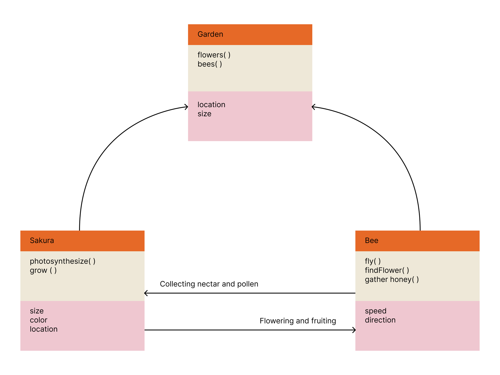
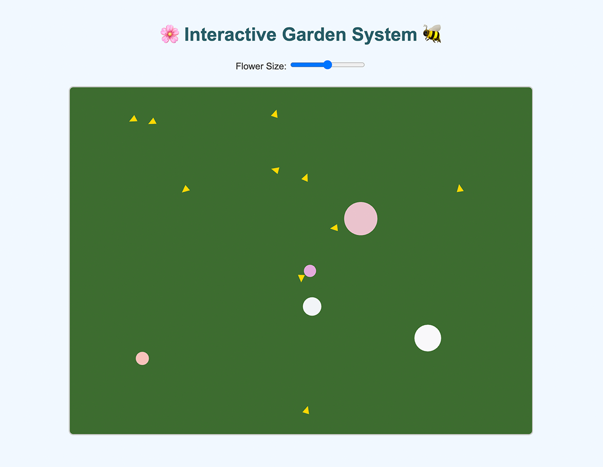
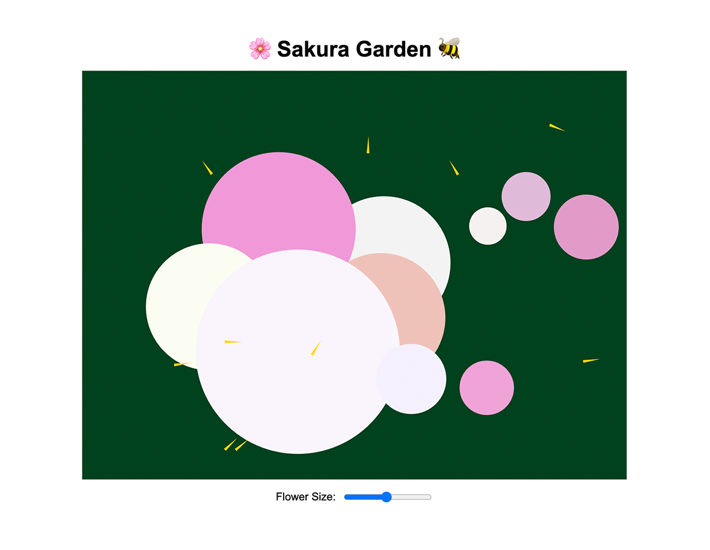
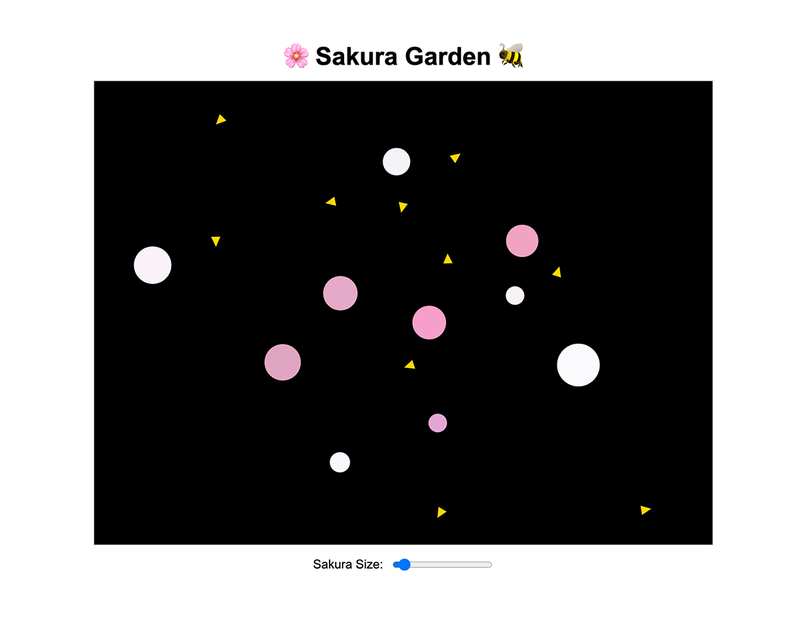

Sakura Garden UML
Intent & Process
The Sakura Garden System simulates the natural interaction between sakura and bees in a simple environment. Each sakura grows gradually while bees move across the sakura. Users can click to add new sakura and adjust their initial size using the slider.
I want to create a poetic visualization inspired by springtime. The process involved designing the system’s basic components, Sakura and Bee classes, and also defining their behaviors.
The UML diagram above illustrates the relationships between classes, highlighting how flowers and bees coexist and interact within the system.


